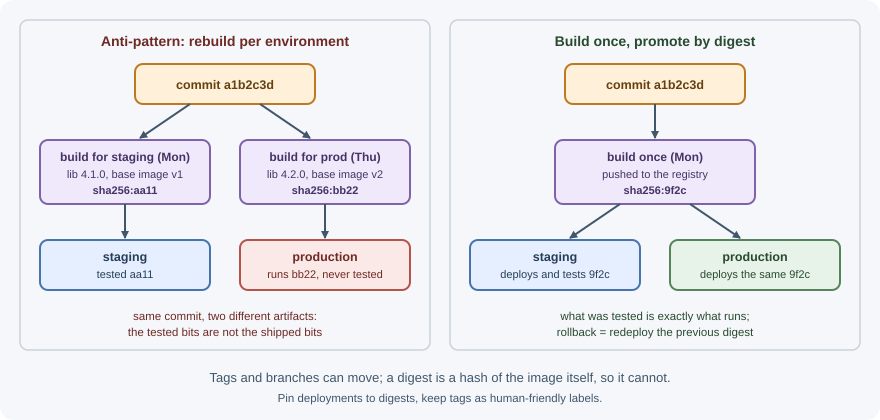

Artifacts and Environment Promotion¶
An artifact is the thing you actually deploy: a container image, a package tarball, a binary, or a bundle of static files. Environment promotion is the practice of moving that one artifact, unchanged, from development to staging to production, with checks and approvals between the steps and only configuration differing per environment.
This lesson covers what counts as an artifact, how to identify and version it (container images by digest), artifact registries, promotion without rebuilding, injecting environment-specific configuration at deploy time, approvals and protected environments, and deployment records that make every release traceable.
Why it matters¶
"It worked in staging" only means something if production runs the same
bits. Teams that rebuild for each environment, or deploy mutable tags
such as latest, cannot be sure of that: a dependency release, a new base
image, or a retagged image can change what runs between one environment
and the next. Promotion by immutable identifier turns the pipeline into
evidence: this exact artifact passed these tests, was approved by this
person, and has run in production since this time. It also makes rollback
trivial, because the previous artifact still exists and can be redeployed
in seconds.
Real-world usage¶
- Twelve-Factor apps. Build, release, run separates the build (an executable bundle) from the release (that build plus an environment's config), and says every release must have a unique ID and never be modified; Config says configuration that varies between deploys belongs in the environment, not in the code or build.
- Google release engineering. The SRE book's Release Engineering chapter describes hermetic builds, packages versioned with a unique hash and signed, labels that reference a package by build ID, binaries that report their build date, revision, and build identifier, and an audit trail of every release step.
- OCI content addressing. The
OCI image specification
identifies image manifests and layers by digest (for example
sha256:plus a hash of the content), which is what makes "deploy exactly this image" possible. - GitHub deployments. Jobs that reference an environment create deployment records, and the deployments REST API exposes them, linking environment, commit, and status.
Popular tools and providers: GitHub Container Registry, Amazon ECR,
Google Artifact Registry, Azure Container Registry, Docker Hub, JFrog
Artifactory, Sonatype Nexus, the npm registry, docker buildx imagetools,
crane, skopeo, and GitOps tools such as Argo CD and Flux for
promotion.
How it works¶
What an artifact is¶
| Artifact | Identity | Stored in | TaskFlow example |
|---|---|---|---|
| Container image | Manifest digest sha256:... |
Container registry | ghcr.io/example/taskflow-api@sha256:9f2c... |
| npm package | Name + version (immutable once published) + integrity hash | npm registry | @example/taskflow-sdk@2.4.0 |
| Static web bundle | Content-hashed file names, archive checksum | Object storage or CDN | TaskFlow Web dist/ |
| Binary or installer | File checksum, signature | Release assets, object storage | Desktop client installer |
| Helm chart or config bundle | Chart version, digest (OCI charts) | OCI registry or chart repo | taskflow-api chart 1.8.0 |
Good artifacts share four properties: they are immutable (never changed after creation), uniquely identified (by digest or an immutable version), traceable (they record the commit and build that produced them), and environment-neutral (no environment's settings baked in).
Digests versus tags¶
A container tag (:2.4.0, :main, :latest) is a movable name; the
registry lets anyone with push rights point it at a different image. A
digest is the SHA-256 hash of the image manifest, so it identifies
exactly one image and can never point anywhere else. Multi-platform
images have an index digest that covers each platform's image.
docker buildx imagetools inspect ghcr.io/example/taskflow-api:2.4.0
# Name: ghcr.io/example/taskflow-api:2.4.0
# MediaType: application/vnd.oci.image.index.v1+json
# Digest: sha256:9f2c... (index digest covering amd64 and arm64)
Use tags as human-friendly labels (2.4.0, sha-a1b2c3d...) and deploy
by digest (image@sha256:...). Some registries can make tags immutable
(Amazon ECR's tag immutability setting, for example), which prevents
overwriting a release tag. Image tagging conventions are covered in
images, registries, and tagging.
Versioning artifacts¶
Every artifact should carry at least:
- the commit SHA it was built from (tag
sha-<commit>and labelorg.opencontainers.image.revision), - a release version if it is a release (
2.4.0), and - the build run that produced it (a link or ID, recorded in labels or attestations).
Never deploy latest or branch-name tags to shared environments: two
nodes pulling :main an hour apart can run different code, and a restart
can silently upgrade a running service.
Artifact registries¶
Registries store artifacts and control who can push and pull them. Things to configure deliberately:
- Access: CI pushes with short-lived credentials (
GITHUB_TOKENfor GHCR, OIDC-issued cloud credentials for ECR or Artifact Registry); runtime environments pull with read-only identities. - Immutability: protect release tags from being overwritten.
- Retention: delete untagged and old development images automatically, but keep everything that is or recently was deployed, because rollback needs it.
- Scanning: most registries scan images for known vulnerabilities on push.
- Proximity: use a registry in the same cloud region as the runtime, or a pull-through cache, to speed up deploys and survive outages of public registries.
Workflow artifacts in GitHub Actions (actions/upload-artifact) are for
passing files between jobs and keeping reports; they expire (90 days by
default) and are not a release store.
Promotion without rebuilding¶
Promotion means "this artifact is now approved for the next environment". There are several mechanisms, all of which keep the artifact unchanged:
| Mechanism | How | Notes |
|---|---|---|
| Deploy by digest per environment | The pipeline passes the digest from the build job to each deploy job | Simplest; the deployment record is the promotion record |
| Add a tag | docker buildx imagetools create --tag ...:2.4.0 ...@sha256:... |
No rebuild; copies the manifest reference |
| Copy between registries | crane copy or skopeo copy from a dev registry to a prod registry |
Preserves the digest; separates prod pull permissions |
| GitOps | Commit the new digest into the environment's config repository | Argo CD or Flux applies it; Git history is the audit log (see immutable infrastructure and GitOps) |

Environment-specific configuration at deploy time¶
If one artifact runs everywhere, everything that differs must come from outside it:
- Environment variables and secrets injected by the platform (Kubernetes Secrets and ConfigMaps, ECS task definitions, a secrets manager), never baked into the image.
- Configuration files mounted at runtime.
- Feature flags read at runtime.
Backend services read configuration at startup, so this is natural.
Frontends are harder: Vite and similar bundlers inline
import.meta.env.VITE_* values at build time, which forces a build per
environment. To promote one TaskFlow Web bundle, load runtime
configuration (a config.json written at deploy time) instead; the
trade-offs are covered in
build-time versus runtime configuration.
Approvals and protected environments¶
Promotion to sensitive environments passes through gates:
![Diagram: a merge to main builds once and pushes to the registry as taskflow-api at sha256:9f2c; the digest deploys automatically to dev, and after smoke tests pass the same digest deploys to staging; when end-to-end tests are green, the production deploy waits at an approval gate with a required reviewer, self-review prevented, and deployments allowed only from main, after which environment secrets are released and the same digest deploys to production as a 5% canary then 100%, with rollback by redeploying the previous digest; each deployment writes a record, and the history shows dev, staging, and production all running sha256:9f2c from commit a1b2c3d.](../promotion-approval-pipeline.svg)
- Automated gates decide whether promotion is safe: tests pass, error rates in staging are normal, a canary is healthy.
- Manual approval decides whether promotion is wanted now: a required reviewer on the production environment, often the release owner. Give approvers context (the diff since the last production deploy, test results, the change ticket) or approvals become rubber stamps.
- Environment protection keeps the rules enforceable: only
main(or release tags) can deploy to production, the person who triggered the run cannot approve it, and production secrets are only released to jobs that passed the gates.
Continuous deployment replaces the manual approval with automated analysis; the environment protections stay.
Deployment records and traceability¶
Every deployment should record what (artifact digest and version), from where (commit SHA, pipeline run), to where (environment), who (triggering user and approver), when, and result. With these records you can answer, in seconds:
- What is running in production right now, and since when?
- Which commits shipped in the deploy that started the incident?
- What do we roll back to?
- What are our deployment frequency and change lead time? (See continuous integration fundamentals.)
GitHub records a deployment for every job that references an environment; artifact attestations add signed provenance linking the digest to the workflow that built it (see pipeline and supply chain security).
When to use and when not to use¶
| Practice | Use when | Adapt when |
|---|---|---|
| Promote by digest | Always for container deployments | Platforms that only accept tags: use immutable tags derived from the digest or commit |
| Separate dev and prod registries with copy-on-promote | Strict separation of who can pull production images | Small teams: one registry with read-only prod pulls is fine |
| Manual approval before production | Regulated changes, low test confidence, business-timed releases | Mature continuous deployment with automated canary analysis |
| Runtime config for frontends | Promoting one web bundle across environments | Static sites with no environment differences |
| GitOps promotion | Kubernetes platforms with Argo CD or Flux | Simple single-service deployments (direct deploy jobs suffice) |
| Retention policies | Every registry | Never delete images that production might roll back to |
Practical examples¶
Build once, promote by digest through staging and production¶
# .github/workflows/release.yml
name: release
on:
push:
branches: [main]
permissions:
contents: read
jobs:
build-image:
runs-on: ubuntu-latest
permissions:
contents: read
packages: write # push to ghcr.io
outputs:
digest: ${{ steps.push.outputs.digest }}
steps:
- uses: actions/checkout@v7
with:
persist-credentials: false
- uses: docker/setup-buildx-action@v4
- uses: docker/login-action@v4
with:
registry: ghcr.io
username: ${{ github.actor }}
password: ${{ secrets.GITHUB_TOKEN }}
- id: meta
uses: docker/metadata-action@v6
with:
images: ghcr.io/example/taskflow-api
tags: |
type=sha,format=long
- id: push
uses: docker/build-push-action@v7
with:
context: .
push: true
tags: ${{ steps.meta.outputs.tags }}
labels: ${{ steps.meta.outputs.labels }} # includes org.opencontainers.image.revision
build-args: |
GIT_SHA=${{ github.sha }}
cache-from: type=gha
cache-to: type=gha,mode=max
deploy-staging:
needs: build-image
uses: ./.github/workflows/deploy.yml
permissions:
contents: read
id-token: write
with:
environment: staging
image: ghcr.io/example/taskflow-api@${{ needs.build-image.outputs.digest }}
e2e-staging:
needs: deploy-staging
runs-on: ubuntu-latest
steps:
- uses: actions/checkout@v7
with:
persist-credentials: false
- uses: actions/setup-node@v7
with:
node-version-file: .nvmrc
cache: npm
- run: npm ci
- run: npx playwright install --with-deps chromium
- env:
BASE_URL: ${{ needs.deploy-staging.outputs.url }}
run: npx playwright test
deploy-production:
needs: [build-image, e2e-staging]
uses: ./.github/workflows/deploy.yml # the production environment requires approval
permissions:
contents: read
id-token: write
with:
environment: production
image: ghcr.io/example/taskflow-api@${{ needs.build-image.outputs.digest }}
The image is built once; both deploy jobs receive the same digest from
needs.build-image.outputs.digest. deploy.yml is the reusable workflow
from GitHub Actions in depth: its job
references the environment named in its input, so the production job
pauses for the environment's required reviewers, then receives production
variables and secrets.
Add release tags and copy between registries without rebuilding¶
DIGEST=sha256:<digest-from-the-build-job>
# Add a human-friendly release tag to the exact image that passed staging
docker buildx imagetools create \
--tag ghcr.io/example/taskflow-api:2.4.0 \
ghcr.io/example/taskflow-api@"$DIGEST"
# Copy it into the production account's registry; the digest stays the same
crane copy \
ghcr.io/example/taskflow-api@"$DIGEST" \
123456789012.dkr.ecr.us-east-1.amazonaws.com/taskflow-api:2.4.0
crane digest 123456789012.dkr.ecr.us-east-1.amazonaws.com/taskflow-api:2.4.0
# sha256:<same digest>
Neither command rebuilds anything: they add references to, or copy, the existing manifest and layers.
Runtime configuration so one TaskFlow Web bundle serves every environment¶
// src/config.js (TaskFlow Web): configuration loaded at runtime, not build time
let config;
export async function loadConfig() {
const res = await fetch("/config.json", { cache: "no-store" });
if (!res.ok) throw new Error(`Cannot load config.json: ${res.status}`);
config = await res.json(); // for example { "apiBaseUrl": "https://api.example.com" }
return config;
}
export function getConfig() {
if (!config) throw new Error("Config not loaded yet");
return config;
}
// src/main.jsx
import { createRoot } from "react-dom/client";
import { loadConfig } from "./config.js";
import App from "./App.jsx";
loadConfig().then(() => {
createRoot(document.getElementById("root")).render(<App />);
});
#!/bin/sh
# docker-entrypoint.d/40-runtime-config.sh: runs when the nginx container starts
envsubst < /usr/share/nginx/html/config.template.json > /usr/share/nginx/html/config.json
The same image serves staging and production; each environment sets
API_BASE_URL (referenced in config.template.json) at deploy time. The
official nginx image runs executable scripts in /docker-entrypoint.d/
before starting. Only non-secret values belong in config.json, because
browsers can read it.
What is running, and since when?¶
# Last five production deployments with commit, time, and who triggered them
gh api "repos/{owner}/{repo}/deployments?environment=production&per_page=5" \
--jq '.[] | {id, sha: .sha[0:7], created_at, creator: .creator.login}'
# Status history of one deployment
gh api "repos/{owner}/{repo}/deployments/<deployment-id>/statuses" \
--jq '.[] | {state, created_at, log_url}'
Pair this with a /version endpoint on the service (see
versioning, tags, and releases)
to confirm that the running process matches the record.
A registry retention policy that protects rollbacks¶
{
"rules": [
{
"rulePriority": 1,
"description": "Delete untagged images after 14 days",
"selection": {
"tagStatus": "untagged",
"countType": "sinceImagePushed",
"countUnit": "days",
"countNumber": 14
},
"action": { "type": "expire" }
},
{
"rulePriority": 2,
"description": "Keep only the newest 300 commit-tagged images",
"selection": {
"tagStatus": "tagged",
"tagPrefixList": ["sha-"],
"countType": "imageCountMoreThan",
"countNumber": 300
},
"action": { "type": "expire" }
}
]
}
This is an Amazon ECR lifecycle policy. Images tagged only with a version
(2.4.0) match no rule, so they are kept, and development images are
pruned. A rule selects an image if any of its tags matches, so a release
image that still has its sha- tag can be expired by rule 2; keep
releases in their own repository, as the crane copy example does.
Before enabling any cleanup, check that every digest deployed in the last
few months is protected.
Best practices¶
- Build each artifact once per commit; never rebuild for an environment.
- Deploy by digest; treat tags as labels and make release tags immutable.
- Stamp commit SHA, version, and build ID into every artifact.
- Keep artifacts environment-neutral; inject configuration and secrets at deploy time.
- Give CI short-lived push credentials and runtimes read-only pull access.
- Gate production with automated checks plus, where needed, a required reviewer with context; restrict which branches can deploy.
- Record every deployment (what, from where, to where, who, when, result).
- Set retention policies that delete clutter but keep rollback targets.
- Use Actions artifacts for files between jobs and reports, registries for releases.
In production¶
- Production behaves differently from staging with "the same version". Detect: the image digests in the two environments differ for the same version tag. Cause: per-environment builds or a moved tag. Fix: build once, deploy by digest, and make release tags immutable.
- A node restart silently upgraded a service.
Detect: pods on different nodes report different
/versionvalues under one Deployment. Cause: the manifest referenced a mutable tag (:latest,:main) and nodes pulled at different times. Fix: reference images by digest in manifests and set pull policies accordingly. - Rollback failed because the previous image was deleted.
Detect:
manifest unknownwhen redeploying the last good version. Cause: an aggressive registry cleanup rule. Fix: restore from another registry or rebuild from the tag as a last resort; change the policy to exclude release tags and recently deployed digests. - Staging's web app calls the production API. Detect: production logs show staging traffic. Cause: the frontend bundle had the API URL baked in at build time and the production build was copied to staging. Fix: load the API URL from runtime configuration and promote one bundle.
- Production deploys wait hours for approval. Detect: long gaps between staging success and production start in deployment records. Cause: a single approver, no notifications, no context. Fix: several eligible reviewers, notifications, a summary of changes and test results on the run, and automated gates so approval is a quick decision.
- Nobody can say which commits are in production.
Detect: incident responders compare timestamps by hand. Cause: no
deployment records or version endpoint. Fix: deploy through
environments that create records, expose
/version, and tag telemetry with the release.
Important terminology¶
- Artifact: The deployable output of a build.
- Image digest: The SHA-256 hash identifying an exact image manifest.
- Tag: A mutable, human-friendly name pointing at an image.
- Immutable tag: A tag the registry will not allow to be repointed.
- Artifact registry: A service that stores and serves artifacts.
- Promotion: Approving an existing artifact for the next environment.
- Build once, deploy many: One build per commit, deployed everywhere.
- Runtime configuration: Settings supplied when the artifact starts, not when it is built.
- Protected environment: An environment with deployment rules such as required reviewers and branch restrictions.
- Deployment record: A log entry linking artifact, commit, environment, approver, time, and result.
- Retention policy: Rules for deleting old artifacts.
Common mistakes and misconceptions¶
- Rebuilding "the same version" for each environment.
- Deploying
latestor branch tags to shared environments. - Baking API URLs, feature flags, or secrets into images or bundles.
- Treating GitHub Actions workflow artifacts as long-term release storage.
- Registry cleanup rules that delete rollback targets.
- Approvals without context, which become rubber stamps.
- Assuming a version tag identifies an image uniquely; only the digest does.
Revision questions¶
- What four properties should a deployable artifact have?
- Why is a digest a safer deployment reference than a tag? When are tags still useful?
- Describe three ways to promote an image without rebuilding it.
- A frontend embeds
VITE_API_URLat build time. What problem does that cause for promotion, and how do you fix it? - What should a deployment record contain, and which DORA metrics can you compute from such records?
- Your registry holds 4,000 images using 1.2 TB. Production deploys about 10 times a day and you need 90 days of rollback history. Roughly how many deployed images must a cleanup policy protect? (About 900.)
- Which gates are automated and which are human in a typical production promotion, and why keep environment protections even with continuous deployment?
- Why are GitHub Actions workflow artifacts not a good release store?
Further learning¶
- Twelve-Factor App: Build, release, run and Config
- Google SRE book: Release Engineering
- GitHub Docs: Managing environments for deployment
- GitHub Docs: Deployments REST API
- Docker Docs: docker buildx imagetools create
- crane copy
- Amazon ECR lifecycle policies
- Next: pipeline and supply chain security. Back to the CI/CD overview.